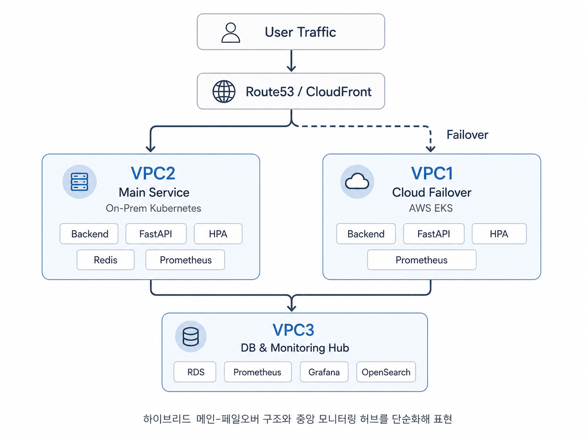

1. 프로젝트 배경과 서비스 목적
북적북적은 사용자의 독서 성향을 분석해 독서 페르소나를 생성하고, 공공 도서관 및 도서 데이터를 활용해 개인화된 도서를 추천하는 팀 프로젝트입니다.
서비스는 독서 설문 기반 페르소나 분석, AWS Bedrock Claude 연동, 개인화된 도서 추천, 공공 도서관 데이터 연동, 도서 검색과 대출 가능 여부 조회 기능을 중심으로 구성했습니다. 이 내용은 팀이 함께 개발한 전체 서비스 범위이며, 제 공식 담당 범위는 아래의 모니터링과 장애 검증 인프라입니다.
2. 전체 하이브리드 아키텍처

팀은 역할이 다른 세 VPC를 VPC Peering으로 연결해 클라우드와 온프레미스 환경을 함께 운영할 수 있는 하이브리드 구조를 구성했습니다.
- VPC1 — 클라우드 클러스터: AWS EKS, ALB, Karpenter, HPA
- VPC2 — 온프레미스 가정 클러스터: EC2 기반 kubeadm Kubernetes, MetalLB, Envoy Gateway. 온프레미스 환경을 모사하기 위해 AWS 관리형 서비스 사용을 최소화했습니다.
- VPC3 — 공유 인프라 허브: RDS PostgreSQL, Prometheus, Grafana, AlertManager, ArgoCD, OpenSearch
위 구성은 팀 전체 아키텍처이며, 제가 모든 리소스를 단독으로 설계하거나 구축한 것은 아닙니다.
3. 담당 역할과 설계 기여
하이브리드 인프라 설계 논의에 참여했으며, VPC1 EKS와 VPC2 kubeadm 환경을 함께 확인할 수 있는 관측 구조와 실제 장애 상황을 재현하는 검증 환경을 구체화했습니다.
- 각 클러스터의 Prometheus 메트릭을 VPC3 중앙 Prometheus로 수집하는 Federation 흐름 구성
- Grafana에서 두 클러스터 상태를 비교하는 Dashboard와 Failover 관측 항목 구성
- Alert Rules와 AlertManager–Slack 장애 알림 흐름 구성
- Locust와 Chaos Mesh를 활용한 CPU, Memory, Redis 장애 테스트 시나리오 설계
4. 모니터링 아키텍처
VPC1과 VPC2에 Prometheus 및 Node Exporter를 배치하고, VPC3 중앙 Prometheus가 Federation 방식으로 두 클러스터의 메트릭을 수집하도록 구성했습니다.
- CPU, Memory, Pod 상태, HTTP 요청, 응답시간, 에러율을 주요 관측 지표로 설정했습니다.
- Backend ServiceMonitor를 통해 Spring Boot 메트릭을 수집했습니다.
- Envoy Gateway PodMonitor를 통해 Gateway 메트릭을 수집했습니다.
- Grafana Dashboard에서 클러스터별 상태를 비교하고, Alert Rules와 AlertManager–Slack 연동으로 장애 알림을 확인했습니다.
Health Score와 Failover 관측 항목은 팀 전체 시스템의 모니터링 설계에 포함된 내용이며, 전체 Failover Lambda와 라우팅 로직을 제가 단독 구현한 것은 아닙니다.
5. 장애 테스트 시나리오
- CPU / Memory 부하: Locust로 트래픽을 발생시키고 Chaos Mesh로 부하를 주입해 HPA의 스케일 아웃과 서비스 에러율을 함께 확인했습니다.
- Memory StressChaos: 메모리 부하가 Pod의 처리 범위를 넘을 때 발생하는 OOMKill과 에러율 변화를 확인한 뒤 주입량을 조정해 재검증했습니다.
- Redis 장애: 캐시 장애를 재현하고 Cache Hit율, 평균 응답시간, Slack Alert 수신 여부를 확인했습니다.
6. 검증 결과
- CPU / Memory 부하에서 HPA가 Pod 2개에서 3개로 확장되는 것을 확인했고, 조정 후 스케일 아웃 과정의 에러율은 0%를 유지했습니다.
- Memory StressChaos 초기 테스트에서는 OOMKill과 최대 5.41%의 에러율을 확인했으며, 재검증 결과 에러율 0%를 확인했습니다.
- Redis 장애 시 Cache Hit율이 100%에서 0%로 감소하고 평균 응답시간이 증가했으며, Slack Alert가 정상 수신되었습니다.
- Redis 실험을 통해 Cache Miss 메트릭과 RDS Fallback 흐름을 추가로 보완할 필요성을 도출했습니다.
7. 트러블슈팅
Memory StressChaos 적용 후 OOMKill 발생
초기 테스트에서 OOMKill이 발생하고 에러율이 5.41%까지 증가했습니다. 단순히 리소스 제한을 높이는 방식 대신 부하 주입량을 조정해 Pod가 감당할 수 있는 범위에서 HPA 동작을 다시 검증했고, 최종 에러율 0%를 확인했습니다.
Redis 장애 이후 추가 관측 필요
Cache Hit율과 응답시간, Slack Alert로 장애 영향은 확인했지만 Cache Miss를 직접 보여 주는 메트릭과 RDS Fallback 흐름은 추가 보완이 필요하다고 판단했습니다.
8. 운영 관점에서 배운 점
모니터링은 대시보드를 만드는 데서 끝나지 않고, 실제 장애를 재현해 지표·확장·알림이 하나의 운영 흐름으로 작동하는지 확인해야 의미가 있다는 점을 배웠습니다.
- 멀티클러스터 환경에서는 같은 기준의 지표를 중앙에서 수집해야 클러스터 상태와 Failover 전후 변화를 비교할 수 있습니다.
- HPA의 확장 여부뿐 아니라 확장 과정의 에러율까지 함께 봐야 사용자 관점의 안정성을 판단할 수 있습니다.
- 장애 알림 수신만으로 끝내지 않고 Cache Hit와 응답시간 같은 서비스 지표를 함께 확인해야 장애 영향을 구체화할 수 있습니다.